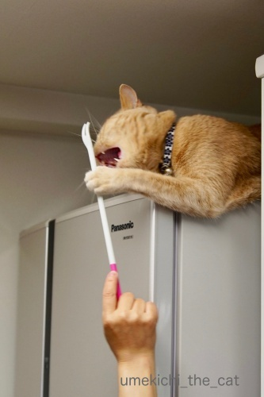
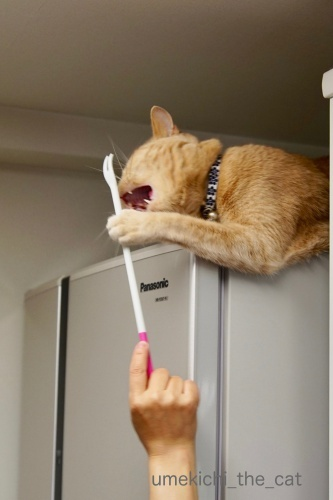

おもちゃじゃないおもちゃ [梅吉]
百均で買ったながーいスプーンとフォークのセット。
スプーンの方はヨーグルトメーカーで作ったヨーグルトを取り出すのに重宝しています。
（付属のものはとっても使いにくかった）
フォークの方は使わないまま半年以上。
ようやく「捨てようかな」と思ったのですが・・・

冷蔵庫の上で寝ていた梅吉さんをツンツンしてみると、釣れた！
すごい食いつき様です。

鼻をふんがふんが言わせながら身を乗り出して来ています。

乗り出しすぎー！！

落ちる、落ちる(^▽^;)
でもおでこの気持ち良いポイントをカキカキすると

あっという間に白目になりましたよw
おもちゃじゃないのに大変喜んでいただけましたよ。
家事をしていると
![[猫]](https://blog.ss-blog.jp/_images_e/101.gif) なあなあ あれであそんでやー
なあなあ あれであそんでやー
と催促してくるほどお気に入り。
しかも孫の手的な使い方もできる優良品でございました＾＾
みなさんも「捨てようかな」と思っているもので
にゃんこをツンツンしてみてはいかがでしょうかwww
 ↑ガブッと一押し↑
↑ガブッと一押し↑
気温は高めながらもカラッとした天気だったのに急に蒸し蒸しとして来ましたね。
大嫌いな梅雨が近づきつつあるのでしょうか。嫌だなー。
気持ちの良かった日に新緑を楽しんでいた梅吉さん。
くんくんくんくん・・・・
梅吉さん、それバラ！とげがあるよ！！![[がく～（落胆した顔）]](https://blog.ss-blog.jp/_images_e/142.gif)
スプーンの方はヨーグルトメーカーで作ったヨーグルトを取り出すのに重宝しています。
（付属のものはとっても使いにくかった）
フォークの方は使わないまま半年以上。
ようやく「捨てようかな」と思ったのですが・・・

冷蔵庫の上で寝ていた梅吉さんをツンツンしてみると、釣れた！
すごい食いつき様です。

鼻をふんがふんが言わせながら身を乗り出して来ています。

乗り出しすぎー！！

落ちる、落ちる(^▽^;)
でもおでこの気持ち良いポイントをカキカキすると

あっという間に白目になりましたよw
おもちゃじゃないのに大変喜んでいただけましたよ。
家事をしていると
と催促してくるほどお気に入り。
しかも孫の手的な使い方もできる優良品でございました＾＾
みなさんも「捨てようかな」と思っているもので
にゃんこをツンツンしてみてはいかがでしょうかwww
気温は高めながらもカラッとした天気だったのに急に蒸し蒸しとして来ましたね。
大嫌いな梅雨が近づきつつあるのでしょうか。嫌だなー。
気持ちの良かった日に新緑を楽しんでいた梅吉さん。
梅吉さん、それバラ！とげがあるよ！！

カフェオレ色の梅吉

梅吉 2023年8月10日 永眠


梅吉と出会った譲渡会

犬猫の理由なき殺処分ゼロ
妄想広告
UMEKICHI 光

爆発的に早い！
時々攻撃的！
Thanks to Mr.Boss365
爆発的に早い！
時々攻撃的！
Thanks to Mr.Boss365

１００均のフォークがおもちゃにもなり、
カキカキで至福の時間を過ごす道具にもなりとは素敵=(^.^)=
お猫様って「えっ？これ？」って物がめっちゃ気にいる時ありますよねぇ(⌒-⌒; )
その辺が見極めれればお気に入りおもちゃに苦労しないで済むのですがw
うちの近くの１００均にもあるかなぁ( ^ω^ )
by ニッキー (2018-05-17 07:44)
梅吉さんは無邪気で可愛いですね～(^_^;)
爺も無邪気で可愛い老人になろう。(^_-)
by 旅爺さん (2018-05-17 09:03)
でたでた白目ーーー！！！
美味しくいただきました(笑)
めっちゃ楽しそうな梅吉君。しばらくは楽しめるねー^^
うちもなにかあったら、まずはつんつんしてみますｗｗ
by リュカ (2018-05-17 09:39)
おはようございます。
梅吉可愛すぎる！！！！！！
百均のながーいフォークをこれからは「梅吉フォーク」と命名！！
キャッチコピーは「おでこカキカキ、ネコ白目！！」
Boss365がプレゼン営業するだにゃ！？by すもも(=^･ｪ･^=)
by Boss365 (2018-05-17 09:39)
お掃除の邪魔するなぁ～かと最初は思いましたが(^_^;)
猫さんのおでこは、やはりポイントなんですね(〃'∇'〃)
ロデムその他、いつもおでこを愛でてあげてます(^_^;)
by middrinn (2018-05-17 09:57)
優れた・百均・長フォークでしたね。
梅吉さんが釣れるのでは価値が何倍にも上がりますね（笑）
最後は気持ち良さそうな白目で満足気。
フォークが孫の手、確かに良い活用じゃありませんか（笑）
by kiki (2018-05-17 10:56)
あんなに垂れ下がって落ちないのエライー。ホッとした後の白眼もサイコーです。
ところでこんなに長いフォークって何に使うの?? スプーンはわかるんだけど。もともと携帯用ミニ孫の手にしか見えないです。
by zombiekong (2018-05-17 11:41)
梅吉くん、食いついてる！食いついてる！
柄の長いフォークにこんな使い方があるんだ～。なんて油断していたら！！
梅吉くんの白目登場でコーヒー噴き出しちゃうところでした！！
危ない！危ない！この時期の白目出現率は高そうだから油断できないｗ
新緑を楽しむ梅吉くんの写真はいい雰囲気です。
優しい時間が流れています(*^-^*)
by emi (2018-05-17 14:52)
緩急のふり幅がスゴすぎる！！さすが梅吉ハン！
梅雨の前にいっぱい初夏を愉しんでね♪
by Ginger (2018-05-17 15:07)
さすが梅吉さん♪
乗り出しすぎて落ちる！！と思っちゃいますが
身体能力が凄すぎます(#^.^#)
白目の梅吉さん（笑
可愛過ぎますぅ～！！
by きぃ (2018-05-17 15:34)
落ちそうで落ちないところがさすが梅吉さん!
先日、フォークで豚を撫でると気持ち良くなり寝てしまう・・・という番組を観ましたが､猫もそうなんですね(^^;)
by kou (2018-05-17 16:40)
梅吉さん気持ち良いポイントに入るとうっとり白目になるのですね！
今日も暑かったです(^^)
by ma2ma2 (2018-05-17 18:59)
猫ってなかなか落ちませんよね！
3枚目のお写真、いったいどうやって全体重足だけで支えてるのか不思議でなりません^^;
梅吉さんの白目スイッチはおでこに付いてたのか～(≧▽≦)
by ゆきち (2018-05-17 20:29)
落っこちそうで落っこちない梅吉さん、バランス感覚がいいですね！
ウチのヤツの場合、「あ、落っこちそうだ・・・」と感じたとき、期待を裏切りません。^^;
白目の梅吉さん、気持ちよさそう♪
by yes_hama (2018-05-17 21:47)
アハハハ(≧▽≦)白目の写真で幸せになれました(^^;
いわゆる｢おもちゃ｣で探さずに
｢おもちゃにならないかな？｣的思考が大切なのですね！
by も〜 (2018-05-17 22:28)
断捨離いいますが、ある日突然役に立ったりしますからね^^;
なんと！遊ぶ以外にも、しろめ製造機でもあったか！
しかしいい寛ぎ場所を知ってるなー^^
by Ja-Kou66 (2018-05-18 00:43)
落っこちそうで、踏ん張ってる梅吉さんの
アンヨが可愛すぎる～(*´ω｀*)
おもちゃに直ぐ飽きてしまうので
悩んでたけど、日常にあるものも
良いのがあるもんですね～(*^^)v
by マーヤ (2018-05-18 01:24)
100均のフォークで、ここまでうっとりできるなんてー(≧∀≦)
by よーちゃん (2018-05-18 08:32)
ニッキーさん＞
まさか食いついてくるとは思わなかったのでびっくりです(^▽^;)
これからは捨てる前にまずは梅吉をつんつん！
で、捨てられないものが溜まっていく予感が大ですwww
旅爺さん＞
あ！私もそういう風に歳をとりたいです！！
今から心がけておかなくちゃ＾＾
梅吉を見て見習おうと思いまーす(^_－)☆
リュカさん＞
白目の季節がはじまったよーーーーー！！！！
シャッターチャンスを逃さないようにしなくちゃ、なのw
フォークで遊んでくれたのは良かったんだけど
ペアのながーいスプーン（ヨーグルト仕込み用）を出しても
遊ぼうとするのでちょっと困ってます。
ヨーグルトに梅吉菌が繁殖するよー(`o´)
Boss365さん＞
命名 梅吉フォークありがとうございます！！
大谷くんの投げるフォークよりも威力がありそうです（そうじゃないw)
middrinnさん＞
ロデムさんはおでこを触らせてくれるのですね！
おでこは気持ちの良いポイントでもありますが
心を許した相手じゃないとなかなか触らせてもらえない場所かもです。
野良さんだと身をすくめたりしますから・・・
middrinnさん、愛されてるわ！！
kikiさん＞
実質50円の優良おもちゃでございましたー＾＾
孫の手フォークがかきかき気持ちが良いのは
どうやらおでこだけなようですw
おちりをかきかきしたらめっちゃおこられましたよ (^▽^;)
餃子のキャベツ、「片栗粉をまぶすと口当たりが良くなるんだって」
と、おっとに教えたところ「今度作る時する！！！！」
とはりきっておりました ( ´艸｀)
zombiekongさん＞
フォーク、二股で切れ込みがすごく浅いのでなんにも刺さりません！
ほんと、どんな使い方を想定した商品なんだか謎です！！
でも携帯用にしては長すぎるよーーー(*>艸<)
梅吉かきかき専用フォークとしか思えませんw
梅吉フォークと命名もしていただきましたwww
emiさん＞
ふふ( ´艸｀)
これからはブログ冒頭に『白目注意！』の喚起をしようかしら・・・
最近は本当に白目がちな日々ですよー。
気温の上昇とリンクしているwww
人間も心地よいな、と感じる季節と時間は猫も同じようですね＾＾
真夏になったらベランダに出たがらなくなるので（灼熱地獄w）
今のうちに一緒に楽しまなきゃ！
Gingerさん＞
気持ちの良い季節はあっという間に終わってしまいますからねー＾＾
梅吉にも存分にベランダを楽しんでもらって
存分に白目になってもらわなきゃ(*>艸<)
きぃさん＞
梅吉の足の裏には吸盤が付いているんですよwwwww
こういう時は下手に手を出すといけないみたいです。
（余計な手を出すと落下率が上昇します）
ニャンコの身体能力を信じて落ちてきたら受け止める方向で
気持ちの準備だけはしております(^▽^;)
kouさん＞
絶妙なバランスで体を支えておりましたよ。
なんとー！豚さんもフォーク好き！！
これはすべての動物にあてはまるのでしょうか・・・
人間には孫の手がありますし( ´艸｀)
ma2ma2さん＞
あっという間に白目でした(*>艸<)
顔にはうっとりポイントが多いのですよー。
ゆきちさん＞
そうそう！落ちませんよね！！
落ちる、と思って手を出すと「よけいなことせんといて」と
叱られちゃいますしw
手出しをするとかえってバランスを崩したりするので
落ちてきたら受け止める、と気持ちの準備だけしております(-_-メ)
ハッ(｣ﾟﾛﾟ)｣秘密スイッチの場所を公開してしまった・・・
yes_hamaさん＞
下手に手出しをすると落ちちゃう時があるので
自己責任ということにしておりますw
(受け止める心の準備はしております(^▽^;) ）
アズ氏は！手を出した方が良いタイプなようで・・・( ´艸｀)
も〜さん＞
すべてのものがおもちゃになる可能性を秘めているのかもー＾＾
でもそうすると捨てられないものがどんどん増えていく(-_-メ)
Ja-Kou66さん＞
そう！こうしてものが溜まっていく・・・ (^▽^;)
なので遊ばないおもちゃを捨てよう！と思いましたw
冷蔵の上、お気に入りなんですよね。
冬場は暖かく、私が美味しそうな食材を出すと
速攻で駆けつけることが出来るw
そのうえ「あそんでー」と催促するとフォークが出てくる(*>艸<)
マーヤさん＞
踏ん張るあちは私も大好物です！！
開いてる指の間をえいえいっ！と
つつきたくてたまりません(*>艸<)
ほら！この瞬間にも手近なもので
あかりちゃんをつんつんしてみてください♡
よろこんでもらえるかもー(^_－)☆
よーちゃん＞
百均グッズ、意外な活用法でした(^_－)☆
にゃんこのおもちゃに困ったらまずは百均！！
by ちぃ (2018-05-20 15:35)
梅吉さんの白目、可愛い♪
うちの子も遊んでくれないかな？
スプーンとフォークセット、探してみます^^。
by nachic (2018-05-21 15:44)